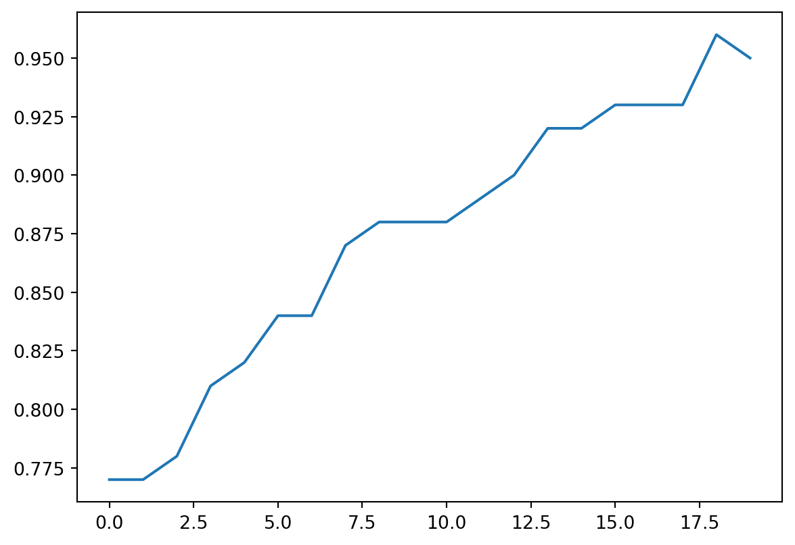

import numpy as np
import seaborn as sns
from tensorflow import keras
from sklearn import metricsRegressão Logística
Nesse exemplos vamos ajustar um modelo de regressão logística para dados simulados. O precesso de simulação dos dados lembra o exemplo 4.
Vamos gerar os dados de input:
n = 1000
X = np.random.uniform(size=(n, 2))
W = np.array([[-0.6], [0.7]])
B = 0.1Agora vamos gerar a variável resposta. Note que primeiro geramos a probabilidade do y ser 1, usando sigmoid(np.dot(X, W) + B). Em seguida, se a probabilidade de y ser igual 1 for maior do que 0.5, dizemos que ele vale 1.
def sigmoid(x):
return 1 / (1 + np.exp(-x))
y = sigmoid(np.dot(X, W) + B)
print("Prob y=1", y[0:5])
y = 1.0 * (y > 0.5)
print("Y=", y[0:5])Prob y=1 [[0.44132695]
[0.50520231]
[0.54533653]
[0.56898554]
[0.61125024]]
Y= [[0.]
[1.]
[1.]
[1.]
[1.]]Agora definimos o modelo. A definição é exatamente igual a definição do modelo da regressão linear (exemplo 3) exceto pela funçõ de ativação sigmoid.
A função de ativação sigmoid faz com que output de np.dot(X, W) + B que acontece dentro da camada densa seja um número entre 0 e 1.
input = keras.layers.Input(shape=(2,))
output = keras.layers.Dense(units=1, activation="sigmoid")(input)
model = keras.Model(inputs=input, outputs=output)
model.summary()Model: "model"_________________________________________________________________ Layer (type) Output Shape Param # ================================================================= input_1 (InputLayer) [(None, 2)] 0 dense (Dense) (None, 1) 3 =================================================================Total params: 3Trainable params: 3Non-trainable params: 0_________________________________________________________________2022-04-27 15:58:38.446237: I tensorflow/core/platform/cpu_feature_guard.cc:151] This TensorFlow binary is optimized with oneAPI Deep Neural Network Library (oneDNN) to use the following CPU instructions in performance-critical operations: AVX2 FMA
To enable them in other operations, rebuild TensorFlow with the appropriate compiler flags.Agora vamos compilar o modelo passando a função de perda, otimizador e métricas. Pontos importantes:
- Como o problema agora é de classificação binária (o
ypode ter valores 0 ou 1), usamos a função de perdabinary_crossentropy. - Podemos passar uma lista de métricas para o Keras calcular durante o ajuste do modelo. Por exemplo aqui, pedimos para ele calcular a acurácia.
model.compile(
loss=keras.losses.binary_crossentropy,
optimizer=keras.optimizers.SGD(learning_rate=0.1),
metrics=["accuracy"]
)Agora podemos ajustar o modelo. O parâmetro validation_split=0.1 fala para o Keras separar 10% das observações de (x,y) e usá-las apenas para reportar métricas nessa base de validação (as observações são selecionadas de forma aleatória).
history = model.fit(x=X, y=y, batch_size=32, epochs=20, validation_split=0.1,
verbose=2)Epoch 1/2029/29 - 0s - loss: 0.5566 - accuracy: 0.8033 - val_loss: 0.4929 - val_accuracy: 0.7700 - 459ms/epoch - 16ms/stepEpoch 2/2029/29 - 0s - loss: 0.5110 - accuracy: 0.7011 - val_loss: 0.4615 - val_accuracy: 0.7700 - 46ms/epoch - 2ms/stepEpoch 3/2029/29 - 0s - loss: 0.4896 - accuracy: 0.7122 - val_loss: 0.4423 - val_accuracy: 0.7800 - 38ms/epoch - 1ms/stepEpoch 4/2029/29 - 0s - loss: 0.4717 - accuracy: 0.7233 - val_loss: 0.4272 - val_accuracy: 0.8100 - 45ms/epoch - 2ms/stepEpoch 5/2029/29 - 0s - loss: 0.4559 - accuracy: 0.7500 - val_loss: 0.4111 - val_accuracy: 0.8200 - 42ms/epoch - 1ms/stepEpoch 6/2029/29 - 0s - loss: 0.4413 - accuracy: 0.7700 - val_loss: 0.3972 - val_accuracy: 0.8400 - 38ms/epoch - 1ms/stepEpoch 7/2029/29 - 0s - loss: 0.4279 - accuracy: 0.7844 - val_loss: 0.3854 - val_accuracy: 0.8400 - 38ms/epoch - 1ms/stepEpoch 8/2029/29 - 0s - loss: 0.4159 - accuracy: 0.8067 - val_loss: 0.3746 - val_accuracy: 0.8700 - 36ms/epoch - 1ms/stepEpoch 9/2029/29 - 0s - loss: 0.4048 - accuracy: 0.8222 - val_loss: 0.3633 - val_accuracy: 0.8800 - 37ms/epoch - 1ms/stepEpoch 10/2029/29 - 0s - loss: 0.3946 - accuracy: 0.8344 - val_loss: 0.3539 - val_accuracy: 0.8800 - 37ms/epoch - 1ms/stepEpoch 11/2029/29 - 0s - loss: 0.3851 - accuracy: 0.8444 - val_loss: 0.3443 - val_accuracy: 0.8800 - 37ms/epoch - 1ms/stepEpoch 12/2029/29 - 0s - loss: 0.3762 - accuracy: 0.8444 - val_loss: 0.3364 - val_accuracy: 0.8900 - 36ms/epoch - 1ms/stepEpoch 13/2029/29 - 0s - loss: 0.3679 - accuracy: 0.8567 - val_loss: 0.3293 - val_accuracy: 0.9000 - 37ms/epoch - 1ms/stepEpoch 14/2029/29 - 0s - loss: 0.3599 - accuracy: 0.8678 - val_loss: 0.3237 - val_accuracy: 0.9200 - 37ms/epoch - 1ms/stepEpoch 15/2029/29 - 0s - loss: 0.3527 - accuracy: 0.8822 - val_loss: 0.3170 - val_accuracy: 0.9200 - 37ms/epoch - 1ms/stepEpoch 16/2029/29 - 0s - loss: 0.3457 - accuracy: 0.8833 - val_loss: 0.3108 - val_accuracy: 0.9300 - 38ms/epoch - 1ms/stepEpoch 17/2029/29 - 0s - loss: 0.3393 - accuracy: 0.8889 - val_loss: 0.3046 - val_accuracy: 0.9300 - 37ms/epoch - 1ms/stepEpoch 18/2029/29 - 0s - loss: 0.3331 - accuracy: 0.9044 - val_loss: 0.2972 - val_accuracy: 0.9300 - 37ms/epoch - 1ms/stepEpoch 19/2029/29 - 0s - loss: 0.3274 - accuracy: 0.8967 - val_loss: 0.2937 - val_accuracy: 0.9600 - 37ms/epoch - 1ms/stepEpoch 20/2029/29 - 0s - loss: 0.3219 - accuracy: 0.9089 - val_loss: 0.2866 - val_accuracy: 0.9500 - 39ms/epoch - 1ms/stepPodemos fazer graáfio da acurácia ao longo das épocas:
sns.lineplot(x=range(20), y=history.history["val_accuracy"])<AxesSubplot:>
E uma matriz de confusão para o ponto de corte 0.5 - isto é, se a probabilidade predita for maior que 0.5 classificamos como y=1
metrics.confusion_matrix(y, model.predict(X) > 0.5)array([[199, 94],
[ 0, 707]])